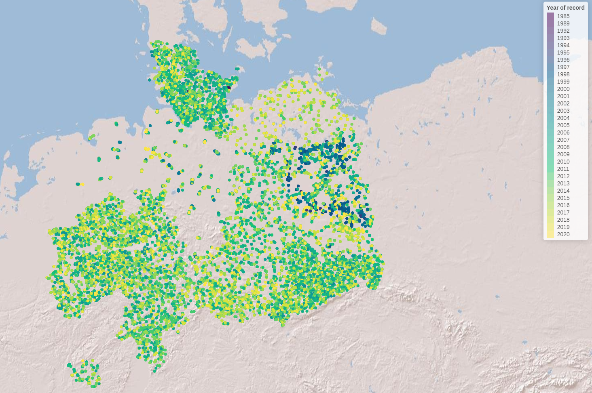
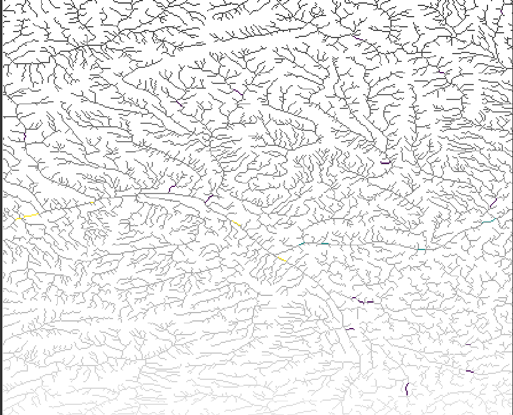
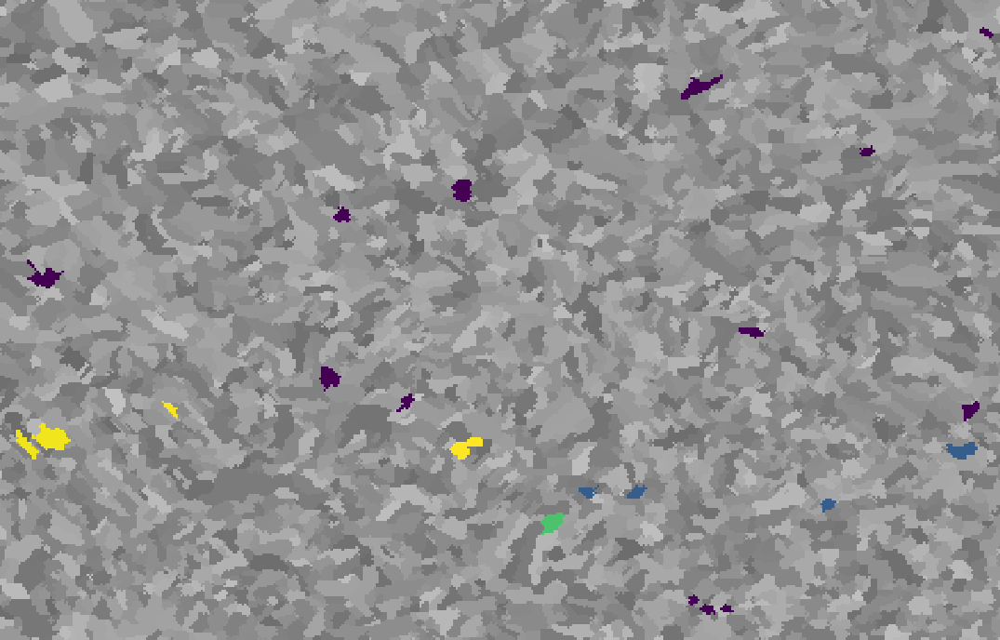

Case study - Germany
Processing of spatial and species data prior to network analyses for freshwater fish in Germany
2024-01-02
Source:vignettes/case_study_germany.Rmd
case_study_germany.RmdIntroduction
Load required libraries
library(hydrographr)
library(rgbif)
library(data.table)
library(dplyr)
library(terra)
library(tools)
library(stringr)
library(leaflet)
library(leafem)
library(sf)Define working directory
# Define the "data_germany" directory, where you have downloaded all the data,
# as the working directory
wdir <- "my/working/directory/data_germany"
setwd(wdir)
# Create a new folder in the working directory to store all the data
dir.create("data")Species data
We first download the occurrence data with coordinates from GBIF
# Once: Download species occurrence data based on the key of the dataset
# and write out to working directory
spdata_all <- occ_download_get(key="0004551-231002084531237",
overwrite = TRUE) %>%
occ_download_import
fwrite(spdata_all, paste0(wdir, "/data/fish_germany_gbif.csv"),
row.names = F, quote = F, sep = "\t")
# Import and clean the data
spdata <- fread(paste0(wdir, "/data/fish_germany_gbif.csv"), sep = "\t") %>%
select(gbifID, decimalLongitude, decimalLatitude, species, year) %>%
rename("longitude" = "decimalLongitude",
"latitude" = "decimalLatitude")
head(spdata)| gbifID | longitude | latitude | species | year |
|---|---|---|---|---|
| 4058501303 | 13.2284 | 52.5709 | Abramis brama | 2007 |
| 4058501307 | 13.1564 | 52.4147 | Abramis brama | 2007 |
| 4058460309 | 13.1861 | 52.4576 | Abramis brama | 2007 |
| 4058501314 | 13.1093 | 52.4079 | Abramis brama | 2008 |
| 4058501316 | 13.5746 | 52.5091 | Abramis brama | 2008 |
| 4058460317 | 13.1177 | 52.4017 | Abramis brama | 2008 |
Let’s visualise the species occurrences on the map
Let’s define the extent (bounding box) of the study area (xmin, ymin, xmax, ymax)
# Define the extent
bbox <- c(min(spdata$longitude), min(spdata$latitude),
max(spdata$longitude), max(spdata$latitude))
# Define color palette for the different years of record
factpal <- colorFactor(hcl.colors(unique(spdata$year)), spdata$year)
# Create leaflet plot
spdata_plot <- leaflet(spdata) %>%
addProviderTiles('Esri.WorldShadedRelief') %>%
setMaxBounds(bbox[1], bbox[2], bbox[3], bbox[4]) %>%
addCircles(lng = ~longitude, lat = ~ latitude,
color = ~factpal(as.factor(year)),
opacity = 1) %>%
addLegend(pal = factpal, values = ~as.factor(year),
title = "Year of record")
spdata_plot
Abiotic variables data
1. Hydrography90m
In order to download layers of the Hydrography90m, we need to know the IDs of the 20°x20° tiles in which they are located. We can obtain these IDs using the function get_tile_id(). This function downloads and uses the auxiliary raster file that contains all the regional units globally, and thus requires an active internet connection.
tile_id <- get_tile_id(data = spdata,
lon = "longitude", lat = "latitude")
# Get reg unit id to crop all the regular tile layers so that
# we have uninterrupted basins
reg_unit_id <- get_regional_unit_id(data = spdata,
lon = "longitude", lat = "latitude")
tile_id## [1] "h16v02" "h18v00" "h18v02"Currently the function returns all the tiles of the regional unit where the input points are located. However, some of them may be far from the study area and hence not always needed in further steps. Please double check which tile IDs are relevant for your purpose using the Tile map found here.
In our case, Germany spreads in just one tile, with the ID “h18v02”, so we will keep only this one.
tile_id <- "h18v02"Then we define the names of the raster and vector layers we want to download.
# Define the raster layers
vars_tif <- c("basin", "sub_catchment", "segment", "accumulation", "direction",
"outlet_dist_dw_basin", "outlet_dist_dw_scatch",
"channel_dist_up_seg", "order_strahler")
# Define the vector layers
# The "basin" layer contains the polygons of the drainage basins while the
# "order_vect_segment" layer is the stream network vector file
vars_gpkg <- c("basin", "order_vect_segment")
# Extend timeout to 1000s to allow uninterrupted downloading
options(timeout = 1000)
# Download the .tif tiles of the desired variables
download_tiles(variable = vars_tif, tile_id = tile_id, file_format = "tif",
download_dir = "data")
# Download the .gpkg tiles of the desired variables
download_tiles(variable = vars_gpkg, tile_id = tile_id, file_format = "gpkg",
download_dir = "data")
# Download the raster mask of the regional unit
download_tiles(variable = "regional_unit",
file_format = "tif",
reg_unit_id = reg_unit_id,
download_dir = "data")2. Elevation - MERIT-HYDRO
To download the elevation files of MERIT-HYDRO, we visit https://hydro.iis.u-tokyo.ac.jp/~yamadai/MERIT_Hydro/ to define the tiles that need to be downloaded. We download the zipped tiles into a new directory called elv, unzip the downloaded .tar file and keep only the tiles that we need
elv_dir <- paste0(wdir, "/data/elv")
dir.create(elv_dir)3. Climate - CHELSA Bioclim
Finally, we will download three CHELSA present Bioclim variables. For a quick outlook on the bioclimatic variables you can have a look here.
# Create download directory
dir.create(paste0(wdir, "/data/chelsa_bioclim"))
# Extend timeout to 1000s to allow uninterrupted downloading
options(timeout = 1000)
# Download
# Present, 1981-2010
download.file("https://os.zhdk.cloud.switch.ch/envicloud/chelsa/chelsa_V2/GLOBAL/climatologies/1981-2010/bio/CHELSA_bio12_1981-2010_V.2.1.tif",
destfile = "data/chelsa_bioclim/bio12_1981-2010.tif", mode = "wb")
download.file("https://os.zhdk.cloud.switch.ch/envicloud/chelsa/chelsa_V2/GLOBAL/climatologies/1981-2010/bio/CHELSA_bio15_1981-2010_V.2.1.tif",
destfile = "data/chelsa_bioclim/bio15_1981-2010.tif", mode = "wb")
download.file("https://os.zhdk.cloud.switch.ch/envicloud/chelsa/chelsa_V2/GLOBAL/climatologies/1981-2010/bio/CHELSA_bio1_1981-2010_V.2.1.tif",
destfile = "data/chelsa_bioclim/bio1_1981-2010.tif", mode = "wb")Cropping the raster files
After having downloaded all the layers, we need to crop them to the extent of our study area extended by 500 km, so that our basins are not split in half.
Let’s define the extent (bounding box) of the study area (xmin, ymin, xmax, ymax)
bb <- c(0.256, 20, 45, 55.4325)We then crop the raster tiles to the extent using the function crop_to_extent() in a loop
for(itile in raster_tiles) {
crop_to_extent(raster_layer = itile,
bounding_box = bb,
out_dir = study_area_dir,
file_name = paste0(str_remove(basename(itile), ".tif"),
"_crop.tif"),
quiet = FALSE,
compression = "high",
bigtiff = TRUE,
read = FALSE)
}Filtering the sub-catchment and basin .gpkg files
In case you don’t work on a server, we suggest you to download the
output files of this chunk from the following links and then copy them
in the folder study_area_dir:
# !! Only run this chunk on a machine with more than 16 GB RAM,
# as the input files are really big !!
# Load the cropped stream and basin raster layer of the study area.
# The stream raster can be used interchangeably with the sub_catchment raster,
# because the stream IDs are the same as the sub-catchment IDs.
# Here we use the stream raster because it's smaller in size.
stream_layer <- rast(paste0(study_area_dir, "/segment_h18v02_crop.tif"))
basin_layer <- rast(paste0(study_area_dir, "/basin_h18v02_crop.tif"))
# Get all sub-catchment and basin IDs of the study area
subc_ids <- terra::unique(stream_layer)
basin_ids <- terra::unique(basin_layer)
# Get the full path of the stream order segment GeoPackage tile
order_tile <- list.files(wdir, pattern = "order.+_h[v0-8]+.gpkg$",
full.names = TRUE, recursive = TRUE)
basin_gpkg_tile <- list.files(wdir, pattern = "bas.+_h[v0-8]+.gpkg$",
full.names = TRUE, recursive = TRUE)
# Filter the sub-catchment IDs from the GeoPackage of the order_vector_segment
# tiles (sub-catchment ID = stream ID)
# Save the stream segments of the study area
filtered_stream <- read_geopackage(order_tile,
import_as = "sf",
subc_id = subc_ids$segment_h18v02_crop,
name = "stream")
sf::write_sf(filtered_stream, paste(study_area_dir,
paste0(str_remove(basename(order_tile), ".gpkg"),
"_crop.gpkg"), sep="/"))
filtered_bas <- read_geopackage(basin_gpkg_tile,
import_as = "sf",
subc_id = basin_ids$basin_h18v02_crop,
name = "ID")
sf::write_sf(filtered_bas, paste(study_area_dir,
paste0(str_remove(basename(basin_gpkg_tile), ".gpkg"),
"_crop.gpkg"), sep="/"))Merging the elevation tiles
# These are the elevation tiles that include our study area
elv_tiles <- c("n45e000_elv.tif", "n50e010_elv.tif", "n60e000_elv.tif",
"n45e005_elv.tif", "n50e015_elv.tif", "n60e005_elv.tif",
"n45e010_elv.tif", "n55e000_elv.tif", "n60e010_elv.tif",
"n45e015_elv.tif", "n55e005_elv.tif", "n60e015_elv.tif",
"n50e000_elv.tif", "n55e010_elv.tif", "n50e005_elv.tif",
"n55e015_elv.tif")
merge_tiles(tile_dir = elv_dir,
tile_names = elv_tiles,
out_dir = study_area_dir,
file_name = "elv_study_area.tif",
compression = "high",
bigtiff = TRUE,
quiet = FALSE)
# crop to our extent
crop_to_extent(raster_layer = paste0(study_area_dir, "/elv_study_area.tif"),
bounding_box = bb,
out_dir = study_area_dir,
file_name = "elv_study_area_crop.tif",
quiet = FALSE,
compression = "high",
bigtiff = TRUE,
read = FALSE)Finally, we will crop the CHELSA Bioclim layers.
We define the directory containing the layers to be cropped and we list their file names
dir_chelsa <- paste0(wdir, "/data/chelsa_bioclim")
files_chelsa <- list.files(dir_chelsa, pattern = ".tif", full.names = TRUE)
for(ifile in files_chelsa) {
crop_to_extent(
raster_layer = ifile,
bounding_box = bb,
out_dir = study_area_dir,
file_name = basename(ifile),
read = FALSE,
quiet = TRUE)
}Extracting sub-catchment IDs
Extract the IDs of the sub-catchments where the points are located. This step is crucial, as many of the functions that we will later use require a vector of sub-catchment IDs as input. Note that the function extract_ids() can be used to extract the values at specific points of any raster file provided to the argument subc_layer. It can be safely used to query very large raster files, as these are not loaded into R.
spdata_ids <- extract_ids(data = spdata,
id = "gbifID",
lon = "longitude", lat = "latitude",
basin_layer = paste0(study_area_dir, "/basin_h18v02_crop.tif"),
subc_layer = paste0(study_area_dir, "/sub_catchment_h18v02_crop.tif"))| longitude | latitude | gbifID | subcatchment_id | basin_id |
|---|---|---|---|---|
| 13.2284 | 52.5709 | 4058501303 | 507197109 | 1294020 |
| 13.1564 | 52.4147 | 4058501307 | 507313477 | 1294020 |
| 13.1861 | 52.4576 | 4058460309 | 507278293 | 1294020 |
| 13.1093 | 52.4079 | 4058501314 | 507316793 | 1294020 |
| 13.5746 | 52.5091 | 4058501316 | 507243022 | 1294020 |
| 13.1177 | 52.4017 | 4058460317 | 507321279 | 1294020 |
Snapping points to the network
Before we can calculate the distance along the stream network between species occurrences, we need to snap the coordinates of the sites to the stream network. Recorded coordinates of point locations usually do not exactly overlap with the digital stream network and, therefore, need to be slightly corrected.
The hydrographr package offers two different snapping functions,
snap_to_network and snap_to_subc_segment. The
first function uses a defined distance radius and a flow accumulation
threshold, while the second function snaps the point to the stream
segment of the sub-catchment the point was originally located in.
For this case study we will use the function
snap_to_network to be able to define a certain flow
accumulation threshold and ensure that the fish occurrences will not be
snapped to a headwater stream (first order stream) if there is also a
higher order stream next to it.

# Define full paths of raster layers
stream_rast <- paste0(study_area_dir, "/segment_h18v02_crop.tif")
flow_rast <- paste0(study_area_dir, "/accumulation_h18v02_crop.tif")
# We need to shorten the gbifIDs because they are too long for GRASS-GIS
# We will delete the first 2 characters ("40") from all IDs
spdata_ids$gbifID_tmp <- str_replace(spdata_ids$gbifID, "40", "")The function is implemented in a for-loop that starts searching for streams with a very high flow accumulation of 400,000 km² in a very short distance and then slowly decreases the flow accumulation to 100 km². If there are still sites left which were not snapped to a stream segment, the distance will increase from 10 up to 30 cells.
# Define thresholds for the flow accumulation of the stream segment, where
# the point location should be snapped to
accu_threshold <- c(400000, 300000, 100000, 50000, 10000, 5000, 1000, 500, 100)
# Define the distance radius
dist_radius <- c(10, 20, 30)
# Create a temporary data.table
point_locations_tmp <- spdata_ids
# Note: The for loop takes about 9 minutes
first <- TRUE
for (idist in dist_radius) {
# If the distance increases to 20 cells only a flow accumulation of 100 km²
# will be used
if (idist == 20) {
# Set accu_threshold to 100
accu_threshold <- c(100)
}
for (iaccu in accu_threshold) {
# Snap point locations to the stream network
point_locations_snapped_tmp <- snap_to_network(data = point_locations_tmp,
id = "gbifID",
lon = "longitude", lat = "latitude",
stream_layer = stream_rast,
accu_layer = flow_rast,
method = "accumulation",
distance = idist,
accumulation = iaccu,
quiet = FALSE)
# Keep point location with NAs for the next loop
point_locations_tmp <- point_locations_snapped_tmp %>%
filter(is.na(subc_id_snap_accu))
if (first == TRUE) {
# Keep the point locations with the new coordinates and remove rows with NA
point_locations_snapped <- point_locations_snapped_tmp %>%
filter(!is.na(subc_id_snap_accu))
first <- FALSE
} else {
# Bind the new data.frame to the data.frame of the loop before
# and remove the NA
point_locations_snapped <- point_locations_snapped %>%
bind_rows(point_locations_snapped_tmp) %>%
filter(!is.na(subc_id_snap_accu))
}
}
}We can write out the result of the snapping
fwrite(point_locations_snapped, paste0(wdir, "/data/spdata_snapped.csv"), sep = ",",
row.names = FALSE, quote = FALSE)
head(point_locations_snapped)| gbifID | longitude | latitude | lon_snap_accu | lat_snap_accu | subc_id_snap_accu |
|---|---|---|---|---|---|
| 58452301 | 10.1725 | 53.8729 | 10.172083 | 53.87292 | 506457237 |
| 58452302 | 10.2972 | 53.6788 | 10.297083 | 53.67875 | 506528521 |
| 58452303 | 9.4411 | 54.0136 | 9.441250 | 54.01375 | 506407992 |
| 58452304 | 9.5619 | 54.0996 | 9.562083 | 54.09958 | 506383004 |
| 58452305 | 10.6518 | 53.6034 | 10.652083 | 53.60375 | 506562036 |
| 58452306 | 9.9609 | 53.8553 | 9.961250 | 53.85542 | 506463635 |
Calculating distances between points
We will calculate the distance between all point locations. The following chunks are computationally heavy, so we suggest to run them on a server.
# Load as graph
stream_graph <- read_geopackage(
gpkg = paste0(study_area_dir, "/order_vect_segment_h18v02_crop.gpkg"),
import_as = "graph")
# Get the network distance (in meters) between all input pairs.
# We provide the subcatchment ids of the snapped points to the argument "subc_id"
subc_distances <- get_distance_graph(stream_graph,
subc_id = point_locations_snapped$subc_id_snap_accu,
variable = "length",
distance_m = TRUE)
head(subc_distances)| from | to | distance |
|---|---|---|
| 506457237 | 506528521 | 167973.69 |
| 506457237 | 506407992 | 92908.34 |
| 506528521 | 506407992 | 111478.74 |
| 506457237 | 506383004 | 161571.37 |
| 506528521 | 506383004 | 136308.05 |
| 506407992 | 506383004 | 105076.42 |
Obtaining network centrality indices
We will now calculate centrality indices using the directed stream
network graph and the function get_centrality We want to
consider only the upstream connected segments, so we set
mode = "in".
The following chunks are computationally heavy, so we suggest to run them on a server.
centrality <- get_centrality(stream_graph, index = "all", mode = "in")We now attach the centrality indices to the species data using the subcatchment id
point_locations_snapped <- left_join(point_locations_snapped, centrality,
by = c('subc_id_snap_accu'= 'subc_id'))
head(point_locations_snapped)| subc_id | degree | closeness | farness | betweeness | eccentricity |
|---|---|---|---|---|---|
| 506226492 | 2 | 4.8e-06 | 210084 | 175492 | 163 |
| 506226723 | 2 | 3.8e-06 | 263544 | 125205 | 185 |
| 506226977 | 2 | 1.4e-06 | 716085 | 167992 | 214 |
| 506227065 | 2 | 3.6e-06 | 279270 | 114210 | 191 |
| 506227782 | 2 | 6.1e-06 | 164017 | 201756 | 144 |
| 506227869 | 2 | 7.5e-06 | 133336 | 168399 | 137 |
We can reclassify the stream segment and sub-catchment raster layers
based on the centrality value of each stream, using the function
reclass_raster. Essentially, we will create two new raster
files, in which each stream pixel will have a centrality value, instead
of the unique ID of the stream or sub-catchment.
reclass_raster(data = point_locations_snapped,
rast_val = "subc_id",
new_val = "betweeness",
raster_layer = paste0(study_area_dir, "/segment_h18v02_crop.tif"),
recl_layer = paste0(study_area_dir,"/segment_h18v02_betweeness.tif"),
read = TRUE)
reclass_raster(data = point_locations_snapped,
rast_val = "subc_id",
new_val = "betweeness",
raster_layer = paste0(study_area_dir, "/sub_catchment_h18v02_crop.tif"),
recl_layer = paste0(study_area_dir,"/sub_catchment_h18v02_betweeness.tif"),
read = TRUE)Here’s what the new segment and sub-catchment layers look like on QGIS, when overlayed with the original layers. The yellow streams, or sub-catchments, have high betweenness values, whereas the darker ones have lower betweenness


Bonus! If we want to include the centrality indices to the stream network .gpkg, we can import the .gpkg and merge it with the centrality table
# Load stream network .gpkg as vector
stream_vect <- read_geopackage(paste0(study_area_dir, "/order_vect_segment_h18v02_crop.gpkg"),
import_as = "SpatVect")
# Merge the centrality table with the vector
stream_vect <- terra::merge(stream_vect, spdata_centr,
by.x = c('stream'), by.y="subc_id")
# Write out the stream gpkg including the centrality indices
writeVector(stream_vect, paste0(study_area_dir, "/order_vect_segment_centr.gpkg"))Extracting zonal statistics of topographic variables
We will calculate the zonal statistics of the Hydrography90m, MERIT-HYDRO DEM and the CHELSA Bioclim variables for the sub-catchments of our species points. Caution, don’t increase the number of cores to more than 3 as this can cause memory problems. However, this highly depends to the number of sub-catchments as well. We recommend to test the function with different parameters to find out what works best for your case.
Let’s first define the input var_layers for the
extract_zonal_stat function
list.files(study_area_dir)
var_layers <- c("bio1_1981-2010.tif", "bio12_1981-2010.tif",
"bio15_1981-2010.tif", "elv_study_area_crop.tif",
"outlet_dist_dw_basin_h18v02_crop.tif")A good practice before aggregating the variables is to check their NoData values:
report_no_data(data_dir = study_area_dir, var_layer = var_layers)
# Raster NoData
# 1 bio1_1981-2010.tif -99999
# 2 bio15_1981-2010.tif 3.40282346600000016e+38
# 3 outlet_dist_dw_basin_h18v02_crop.tif -9999
# 4 bio12_1981-2010.tif -99999
# 5 elv_study_area_crop.tif -9999
# Run the function that returns the zonal statistics.
# We provide the subcatchment ids of the fish points to the argument 'subc_id'.
stats_table_zon <- extract_zonal_stat(
data_dir = study_area_dir,
subc_layer = paste0(study_area_dir, "/sub_catchment_h18v02_crop.tif"),
subc_id = point_locations_snapped$subc_id_snap_accu,
var_layer = var_layers,
out_dir = paste0(wdir, "/data"),
file_name = "zonal_stats.csv",
n_cores = 3)The function also reports the NoData values that are used in the calculation of the zonal statistics of each variable.
We will keep only the mean and sd of each variable of the stats_table:
stats_table_zon <- stats_table_zon %>%
dplyr::select(contains("subc") | ends_with("_mean") | ends_with("_sd")) %>%
rename('subcatchment_id' = 'subc_id')The values in some of the original raster files were scaled, so we need to re-scale them before proceeding to any analyses.
We define the following functions:
clim_scale <- function(x, na.rm = F) (x * 0.1)
offset <- function(x, na.rm = F) (x - 273.15)… and apply them to rescale the values
stats_table_zon <- stats_table_zon %>%
mutate(across(starts_with("bio"), clim_scale)) %>%
mutate(across(matches("bio1_.*_mean"), offset))
head(stats_table_zon)| subcatchment_id | bio1_1981.2010_mean | bio12_1981.2010_mean | bio15_1981.2010_mean | elv_study_area_crop_mean | outlet_dist_dw_basin_h18v02_crop_mean | bio1_1981.2010_sd | bio12_1981.2010_sd | bio15_1981.2010_sd | elv_study_area_crop_sd | outlet_dist_dw_basin_h18v02_crop_sd |
|---|---|---|---|---|---|---|---|---|---|---|
| 506226492 | 8.750000 | 867.0000 | 24.50000 | 2.518750 | 32103.56 | 0.0000000 | 0.0000000 | 0.0000000 | 0.6540439 | 89.4399 |
| 506226723 | 8.850000 | 862.5000 | 25.00000 | 1.404762 | 23899.57 | 0.0000000 | 0.0000000 | 0.0000000 | 0.3062464 | 112.3611 |
| 506226977 | 8.950000 | 835.8753 | 26.32118 | 1.556471 | 10280.49 | 0.0000000 | 0.8442060 | 0.0533449 | 0.5845958 | 347.6842 |
| 506227065 | 8.850000 | 859.7644 | 25.10000 | 1.667797 | 22184.93 | 0.0000000 | 0.0970108 | 0.0000000 | 0.5881429 | 258.6820 |
| 506227782 | 8.716667 | 877.9917 | 23.80000 | 5.733333 | 39542.25 | 0.0471405 | 0.9286714 | 0.0000000 | 0.3933475 | 123.1798 |
| 506227869 | 8.650000 | 882.0288 | 23.51364 | 7.521212 | 42551.11 | 0.0000000 | 0.8227384 | 0.0343174 | 0.5040789 | 292.2345 |
Putting together the final table
We will now perform some left joins to match the zonal statistics table with the original species data.
data_fin <- left_join(point_locations_snapped, stats_table_zon,
by = c('subc_id_snap_accu'= 'subcatchment_id'))
data_fin$gbifID <- as.character(data_fin$gbifID)
data_fin <- left_join(spdata_ids, data_fin)
# Convert the gbifIDs back to the original values
data_fin$gbifID <- str_c("40", data_fin$gbifID)
spdata$gbifID <- as.character(spdata$gbifID)
data_fin <- left_join(spdata, data_fin)
head(data_fin)| gbifID | longitude | latitude | species | year | subcatchment_id | basin_id | lon_snap_accu | lat_snap_accu | subc_id_snap_accu | degree | closeness | farness | betweeness | eccentricity | bio1_1981.2010_mean | bio12_1981.2010_mean | bio15_1981.2010_mean | elv_study_area_crop_mean | outlet_dist_dw_basin_h18v02_crop_mean | bio1_1981.2010_sd | bio12_1981.2010_sd | bio15_1981.2010_sd | elv_study_area_crop_sd | outlet_dist_dw_basin_h18v02_crop_sd |
|---|---|---|---|---|---|---|---|---|---|---|---|---|---|---|---|---|---|---|---|---|---|---|---|---|
| 4058501303 | 13.2284 | 52.5709 | Abramis brama | 2007 | 507197109 | 1294020 | 13.22708 | 52.57042 | 507197712 | 2 | 3.00e-07 | 3090581 | 16724066 | 393 | 9.450000 | 593.5000 | 17.80000 | 31.04762 | 440220.7 | 0.0000000 | 0.0000000 | 0.0000000 | 1.377236 | 151.5696 |
| 4058501307 | 13.1564 | 52.4147 | Abramis brama | 2007 | 507313477 | 1294020 | 13.15625 | 52.41459 | 507313477 | 3 | 2.39e-05 | 41919 | 953343 | 88 | 9.509091 | 589.5500 | 18.60000 | 35.73636 | 427865.0 | 0.0491666 | 0.3460820 | 0.0000000 | 3.234690 | 134.7493 |
| 4058460309 | 13.1861 | 52.4576 | Abramis brama | 2007 | 507278293 | 1294020 | 13.18125 | 52.46292 | 507275834 | 2 | 0.00e+00 | 51830114 | 105429462 | 1303 | 9.547436 | 586.2846 | 18.30000 | 30.78718 | 426400.9 | 0.0158062 | 0.0975034 | 0.0000000 | 2.339974 | 186.9974 |
| 4058501314 | 13.1093 | 52.4079 | Abramis brama | 2008 | 507316793 | 1294020 | 13.10958 | 52.40792 | 507316793 | 2 | 5.00e-01 | 2 | 2310 | 1 | 9.434524 | 580.8988 | 18.60000 | 47.73333 | 433626.8 | 0.0607376 | 1.7258189 | 0.0000000 | 12.098773 | 218.8741 |
| 4058501316 | 13.5746 | 52.5091 | Abramis brama | 2008 | 507243022 | 1294020 | NA | NA | NA | NA | NA | NA | NA | NA | NA | NA | NA | NA | NA | NA | NA | NA | NA | NA |
| 4058460317 | 13.1177 | 52.4017 | Abramis brama | 2008 | 507321279 | 1294020 | 13.11792 | 52.40208 | 507321279 | 2 | 2.50e-02 | 40 | 14989 | 5 | 9.477434 | 579.6389 | 18.60089 | 46.03982 | 432292.3 | 0.0446179 | 1.7279807 | 0.0093655 | 14.462301 | 349.9969 |